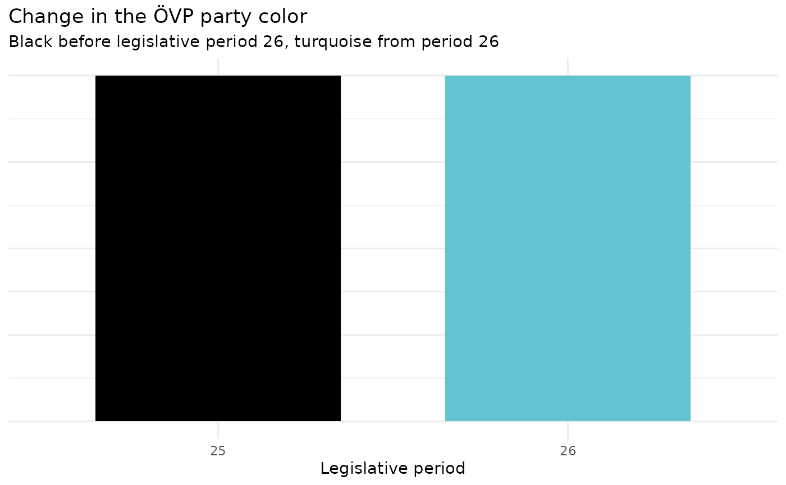

get_party_colors() returns a named vector or tibble of colors for Austrian
political parties and parliamentary groups. It accepts common party codes,
short parliamentary abbreviations, and full party or parliamentary group
names.
Arguments
- parties
Character vector of party or parliamentary group names, abbreviations, or codes. If
NULL, returns the default plotting palette.- legis_period
Optional legislative period. If supplied, the historical color for the Austrian People's Party (
"ÖVP") is returned as"black"before legislative period 26 and as the modern palette color from period 26 onward. May be length 1 or the same length asparties.- output
Character string.
"vector"returns a named character vector;"tibble"returns a tibble with party names and colors.- unmatched
Character string.
"NA"returnsNAfor unmatched inputs;"error"throws an error if any input cannot be matched.
Value
A named character vector by default. With output = "tibble", a
tibble with columns party, canonical_party, and color.
Examples
get_party_colors()
#> SPÖ ÖVP FPÖ F F-BZÖ GRÜNE
#> "#CE000C" "#63C3D0" "#0056A2" "#0056A2" "#0056A2" "#88B626"
#> NEOS NEOS-LIF STRONACH BZÖ LIF L
#> "#E3257B" "#E3257B" "#F47100" "#F47100" "#FFD200" "#FFD200"
#> FRANK JETZT PILZ OK OF
#> "#F47100" "lightgrey" "lightgrey" "grey" "grey"
get_party_colors(c("SPÖ", "ÖVP", "FPÖ"))
#> SPÖ ÖVP FPÖ
#> "#CE000C" "#63C3D0" "#0056A2"
get_party_colors(c("S", "V", "F"))
#> S V F
#> "#CE000C" "#63C3D0" "#0056A2"
get_party_colors(c("ÖVP", "ÖVP"), legis_period = c(25, 26))
#> ÖVP ÖVP
#> "black" "#63C3D0"
# The ÖVP color changed from black to turquoise in legislative period 26.
oevp_data <- data.frame(
legis_period = c(25, 26),
party = c("ÖVP", "ÖVP"),
value = c(1, 1)
)
oevp_data$party_color <- get_party_colors(
parties = oevp_data$party,
legis_period = oevp_data$legis_period
)
if (requireNamespace("ggplot2", quietly = TRUE)) {
ggplot2::ggplot(
oevp_data,
ggplot2::aes(
x = factor(legis_period),
y = value,
fill = party_color
)
) +
ggplot2::geom_col(width = 0.7) +
ggplot2::scale_fill_identity() +
ggplot2::labs(
title = "Change in the ÖVP party color",
subtitle = paste(
"Black before legislative period 26,",
"turquoise from period 26"
),
x = "Legislative period",
y = NULL
) +
ggplot2::theme_minimal() +
ggplot2::theme(
axis.text.y = ggplot2::element_blank(),
axis.ticks.y = ggplot2::element_blank()
)
}
